结论先行
- 是什么：长约10.5米的水墨花卉长卷，从右到左依次画牡丹、石榴、荷花、梧桐、菊花、南瓜、扁豆、紫薇、葡萄（或紫藤）、芭蕉，卷尾是梅、竹、兰／水仙。卷尾狂草落款“天池山人徐渭戏抹”。已核实
- “十三种”不是定论：南博简介写13种，其中有“紫藤、兰”；南博自己的出版物（郑为）写“葡萄、水仙”，并说是“十一个单元”；《中国历代绘画大系》的报道说“十段”。可以说“十三种左右”，同时把分歧讲给学生听。
- 尺寸也有两种说法：多数资料写纵30、横1053.5厘米；南博公众号写37×1049厘米；“大系”写30.2×1049.0厘米。待以南博图录为准
- 流传有据：1779年翁方纲题长诗；1845年陈介祺在琉璃厂购得，次年和李恩庆交换；1891年前后已归叶鹤伏（诗梦斋）；1917年在郭人漳手中，樊增祥两次题跋，齐白石钤“齐白石观”；1954年南京博物院购藏（吕晓晨说购自上海藏家杨文萼）。
- “天下第一徐青藤”：各家都说是谢稚柳看画后说的，但没有找到原始出处（不是他写在画上的题跋，也没找到出自他哪本著作）。待核实能查到的是：20世纪60年代张珩、韩慎先、谢稚柳鉴定此卷为“极精”（《光明日报》2026，南博研究员鲁珊珊）。
- 课堂可用图：本页16张实拍图和1张拼排概览图都是 CC BY-SA 4.0，署名后可以自由使用。整卷高清扫描只找到出版物翻拍，只能课堂使用，所以只给链接，没有放进公开仓库。
1. 图像：整卷概貌
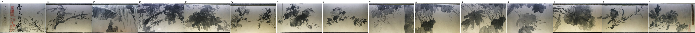
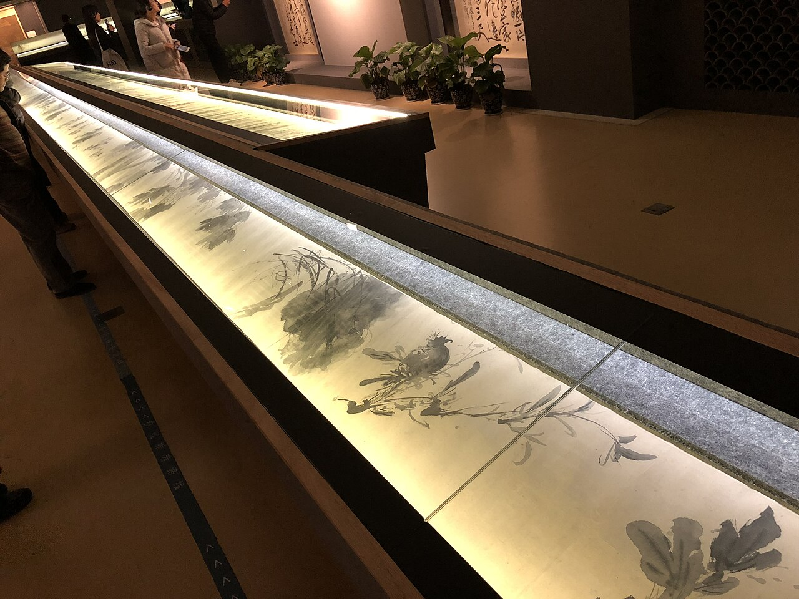
仅限课堂想看整卷黑白高清扫描（9段），可以打开日本中国书画站 qsshc 的徐渭《雑花図巻》页（链接实测200）。这是出版物翻拍，版权不明，所以只给链接，没有转载。已逐段目测，确认是这件作品。
2. 权威页面一览
| # | 标题 | 来源 / 作者 | 可靠度 | 链接实测 | 核实 |
|---|---|---|---|---|---|
| S1 | “笔底明珠”迸发出的精神光芒——徐渭《杂花图》卷艺术探析 | 《光明日报》2026-06-28 第12版，鲁珊珊（南京博物院古代艺术部副研究馆员） | 高（馆方研究员） | 200 | 已核实 |
| S2 | 文物小讲堂 | 徐渭《杂花图卷》 | 南京博物院官方公众号（gh_54dc33b0ca38），2020-02-26；文本：王玉海；附庞鸥（南博艺术研究所副所长）评述 | 高（馆方） | 200 | 已核实 |
| S3 | 郑为《徐渭〈杂花图〉卷》（节选自《南京博物院藏宝录》） | 经 S2 转载；原书出版年、页码未查到 | 高（馆方出版物） | 同 S2 | 转载已核实原书待核实 |
| S4 | Category:Assorted Flowers by Xu Wei | 维基共享资源，18张实拍 | 中（个人实拍，图像真实） | 200 | 已核实 |
| S5 | 齐白石与徐渭 | 吕晓晨（北京画院理论研究部主任），原载北京画院，新浪收藏转载，2018-10-28 | 高（流传、题跋、印章最详细） | 200 | 已核实 |
| S6 | 徐渭《杂花图》为何成南博镇院之宝 | 中国江苏网，2021-04 | 中 | 200 | 已核实 |
| S7 | 南博年度书画大展“秀”镇馆之宝……10米长卷首次完整亮相 | 中国江苏网/扬子晚报，张可，2017-08-30 | 中 | 200 | 已核实 |
| S8 | 徐渭《雑花図巻》 | 日本个人中国书画研究站，附全卷扫描和印章著录 | 中 | 200 | 已核实 |
| S9 | 翁方纲书《徐渭〈杂花图卷〉题跋》 | 书法品品，2021-04-05，有翁跋全文 | 中（释文和 S5 有出入） | 200 | 已核实 |
| S10 | 徐渭《杂花图卷》：狂草入画的典范之作 | 人民网转广州日报，2014-05-21 | 中（引袁宏道有误字） | WebFetch 可读（box 上 curl 超时） | 已核实 |
| S11 | 揭秘南京博物院的“镇馆之宝”【7】 | 人民网文化，2014-08-20（提到“胶墨”） | 中 | WebFetch 可读 | 已核实 |
| S12 | “大系”名画赏析·徐渭《杂花图（翁方纲题诗卷）》 | 中国宁波网，2023-09-13 | 中 | curl 和 WebFetch 均超时 | 内容仅见搜索摘要待核实 |
| S13 | 《明史》卷二百八十八·文苑四·徐渭传 | 维基文库 | 高（正史） | 200 | 已核实 |
| S14 | 袁宏道《徐文长传》 | 维基文库（据《古文观止》《瓶花斋集》卷七） | 高（同时代人） | 200 | 已核实 |
| S15 | 南京博物院藏徐渭《杂花图》探析 | 鲁珊珊；搜索结果称载《东南文化》2013年第6期 | 高（期刊） | 412 / 超时 | 刊期待核实 |
| S16 | 枯笔的审美与隐喻——以徐渭《杂花图卷》为例 | 林茜；搜索结果称载《艺术教育》2015年第6期 | 中（期刊） | 412 / 超时 | 待核实 |
| S17 | 南京博物院蔵 徐渭《雑花図巻》の基礎的記述 | 荒井雄三，2011（CiNii） | 高（专题研究） | 403（机器人拦截） | 待核实 |
| S18 | “天下第一徐青藤”——读徐渭《杂花图》卷 | 鲁力，2000年第10期（刊名未确认） | 中 | 超时 | 待核实 |
| S19 | 徐渭水墨葡萄图轴 | 故宫博物院藏品页（对照作品） | 高 | 200 | 已核实 |
| S20 | 南京博物院官网·典藏 | 南博官网 | 高 | 200 | 站内检索“杂花”“徐渭”“青藤”无此卷条目 |
故宫数字文物库不收此卷，因为它是南博藏品。S19只作徐渭同类题材的对照。
3. 按卷序逐段讲解（右 → 左）
① 卷首：陈师曾题签 + 牡丹
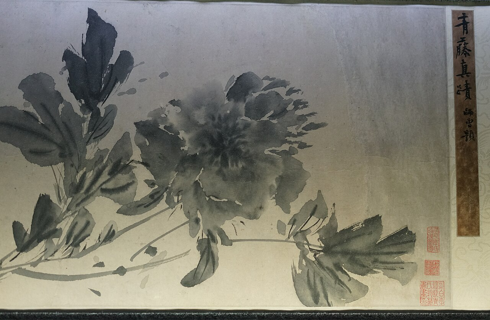
布局：全卷从右向左展开，牡丹居卷首。郑为把卷首“牡丹、石榴、荷花”与卷尾“梅、竹、水仙”视为向两端伸展的填充段，“生态比较完整”。[郑为《南京博物院藏宝录》，南博公众号转载 S3]樊增祥跋：“牡丹水仙押两班”——牡丹与水仙分押卷首卷尾。[S5 转录]
笔墨：鲁珊珊（南博古代艺术部）称“卷首牡丹以华滋墨色作引子”“牡丹花瓣以破笔散锋写出”。[S1]
题签/印：卷首陈师曾题签“青藤真迹。师曾题。”已核实（图上可读 + S5）；题签约题于1917年前后，系吕晓晨推测待核实。画心右下数方印，释文待核实（本页未找到有来源的释文）。
② 石榴
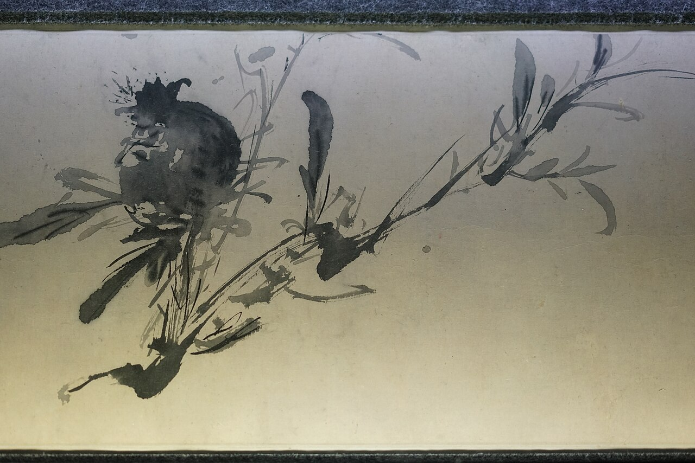
鲁珊珊：“石榴折枝如序曲般扬起节奏”[S1]；樊增祥诗句“石榴裂齿”[S5]。翁方纲诗“葡萄蕉叶榴芙蕖”中的“榴”即此段[S5/S9]。
③ 荷花
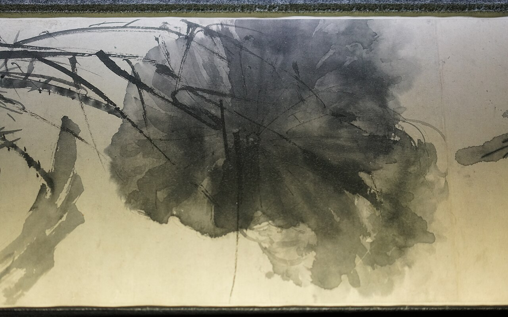
翁方纲诗称“芙蕖”（荷花）[S9]。目测：荷叶为整块浓淡相破的墨面，与右侧石榴的细枝形成疏密对比——这是观察描述，非文献结论。
④ 梧桐（全卷主体之一）
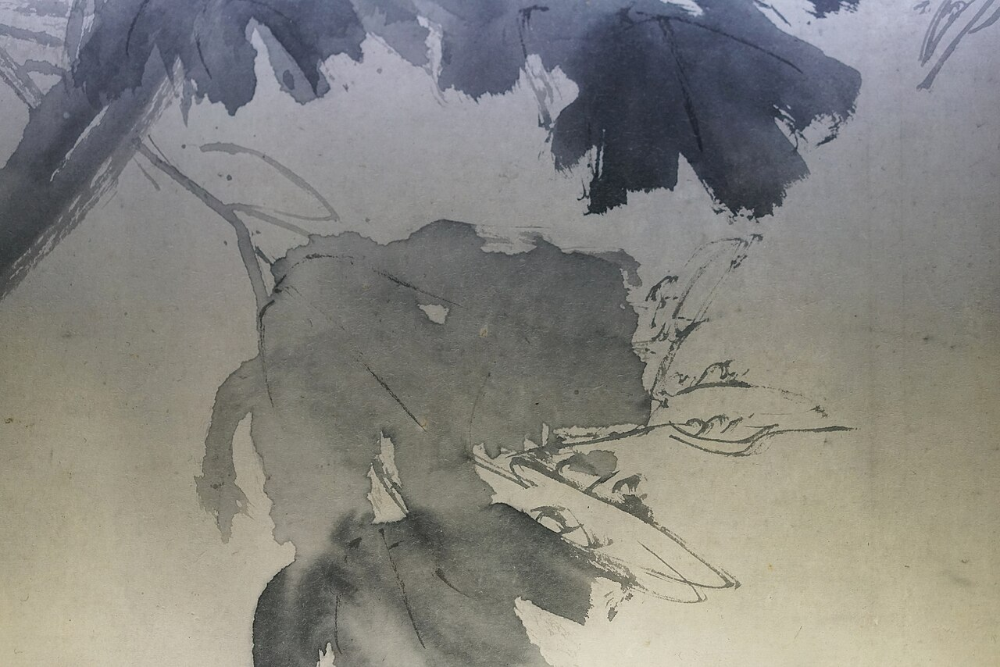

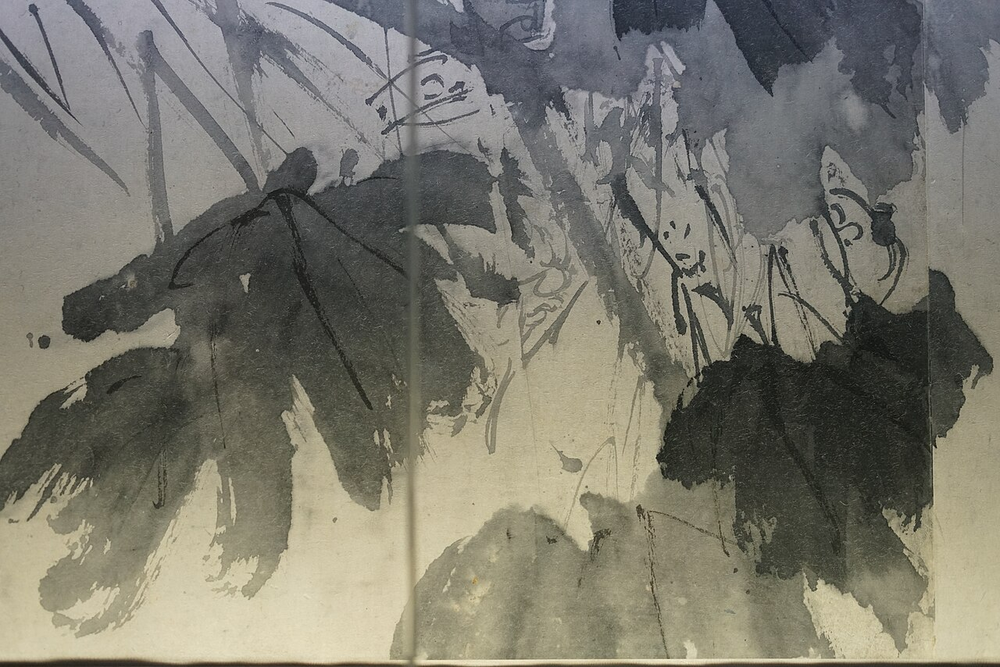

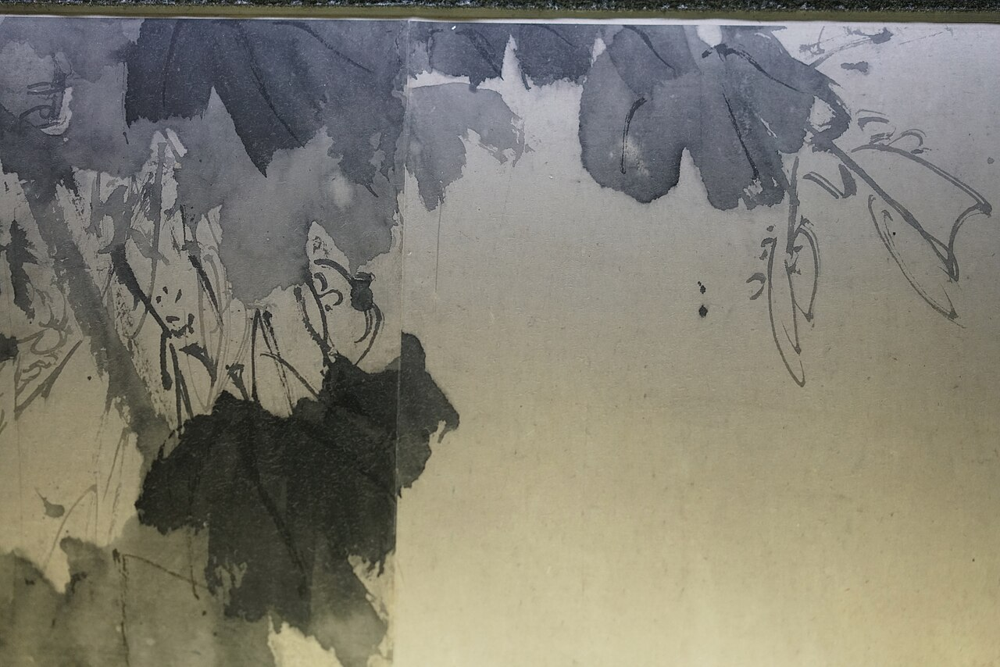

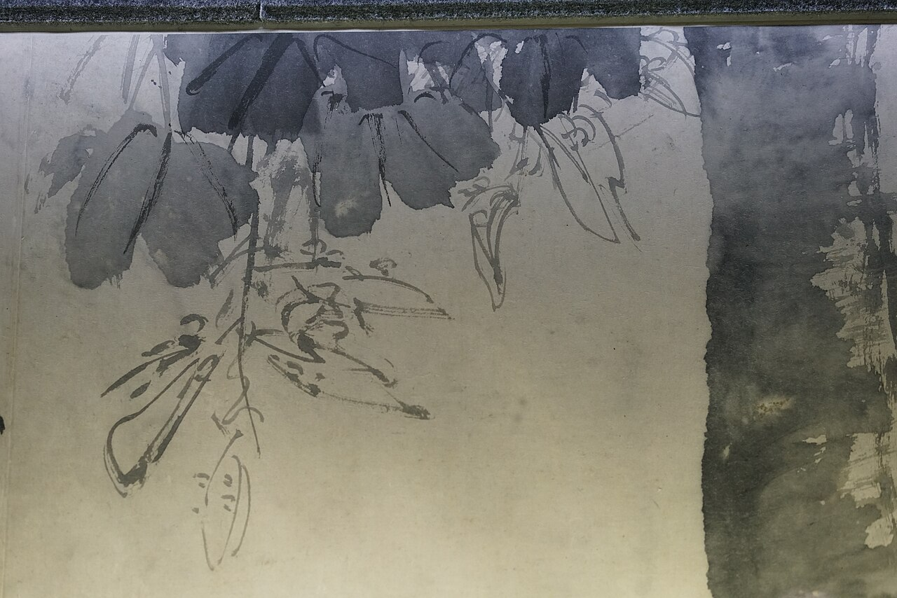

布局：郑为认为“梧桐、葡萄、芭蕉三种，已能基本左右全局”，是“顶天立地”的主体；樊增祥跋“中间双桐为主位，两干圆径五寸余”。[S3][S5]
笔墨：郑为：“梧桐树干圆浑光洁，肥大的叶片在向阳光照下呈现绿色的透明感。”鲁珊珊：“梧桐豆荚段构成旋律主体”。[S3][S1]
照片04–06的先后为按维基文件编号与全卷对照图目测排列，待以南博出版物核对。
⑤ 菊花 · 南瓜 · 扁豆 · 紫薇（中段“宾”位）
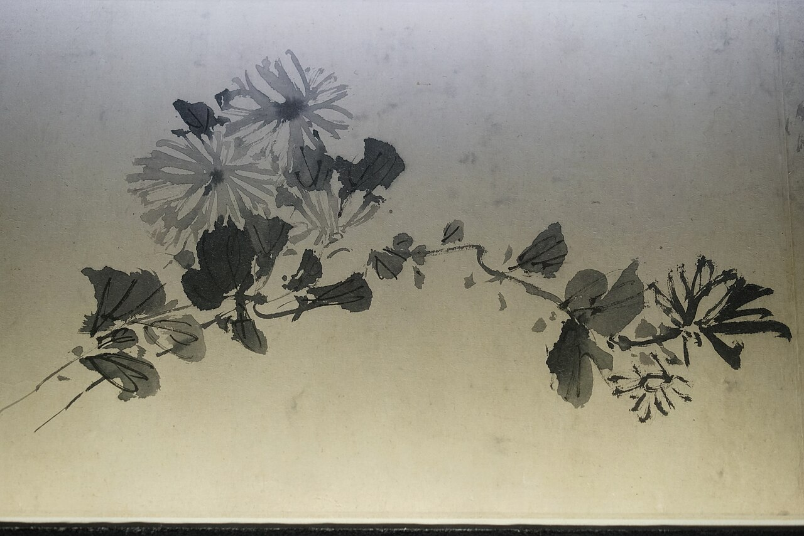

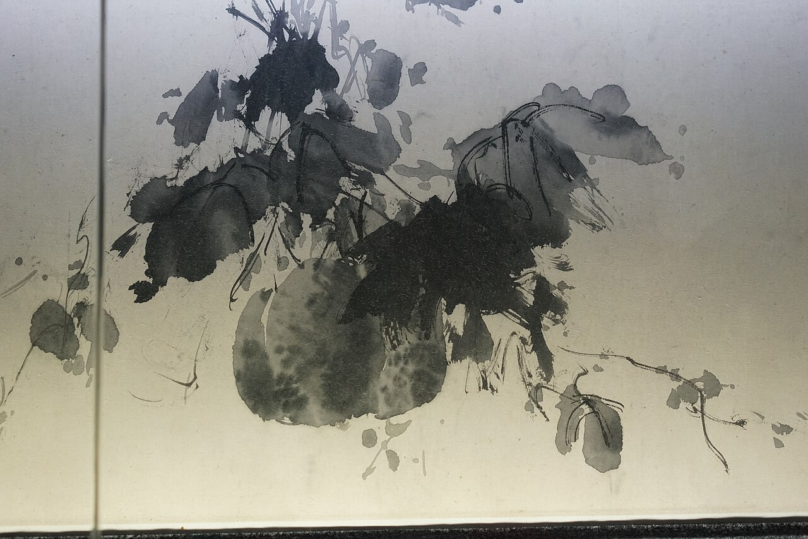

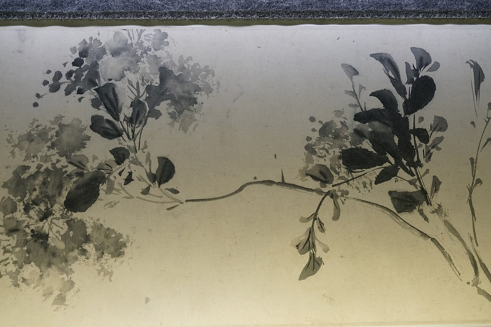

布局：郑为：“在中间添上菊花、南瓜、扁豆、紫薇，又安排它们上下俯昂，笔致紧敛而布局疏松，宾不夺主。”[S3]
笔墨：鲁珊珊提到“南瓜的歪斜”是有意的“变形”处理。[S1]樊增祥“圈花不圆抹叶破”可对照菊花的圈花法。[S5]
⑥ 葡萄／紫藤（名称有分歧）
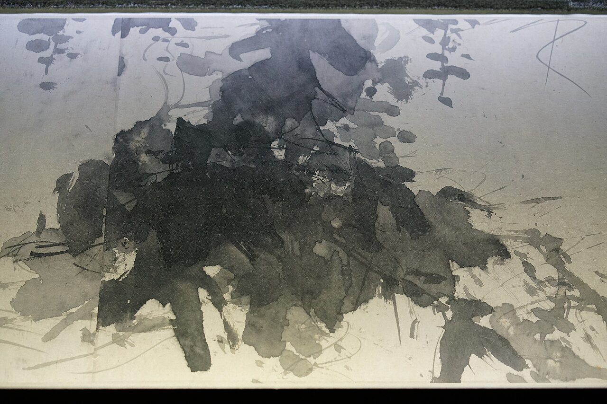

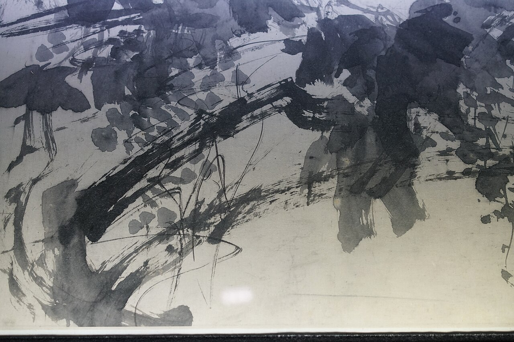

分歧：南博官方简介与多数媒体列“紫藤”；郑为、翁方纲题诗（“葡萄蕉叶”）、樊增祥题诗（“葡萄芭蕉美在叶”）都写“葡萄”。本页不替权威下结论。[S2][S3][S5][S9]
笔墨：郑为：葡萄“枝干显得枯劲带有韧性，叶瓣簇聚覆盖……累累的葡萄，虽然随手拈来，却光亮而又错落有致”。鲁珊珊：至“紫藤芭蕉处抵达高潮——笔锋如狂风骤雨，枯涩线条与斑驳墨点交织”，“紫藤段枯笔飞白”。樊增祥：“以篆籀法作藤蔓”。[S3][S1][S5]
⑦ 芭蕉
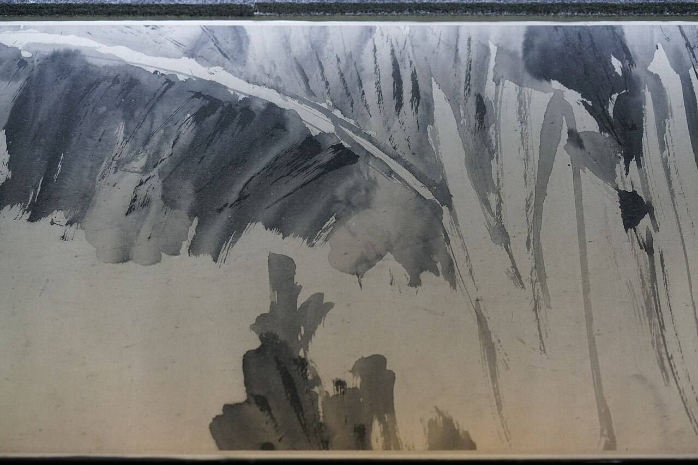
郑为：“仅用几笔淡墨线条，把茎秆的肥嫩生态表现无余。顶端用浓墨淡墨，画了向左右舒展的一丛蕉叶。”[S3]樊增祥：“钩筋引络铁线粗”。[S5]
⑧ 卷尾：梅 · 竹 · 兰／水仙 · 款印
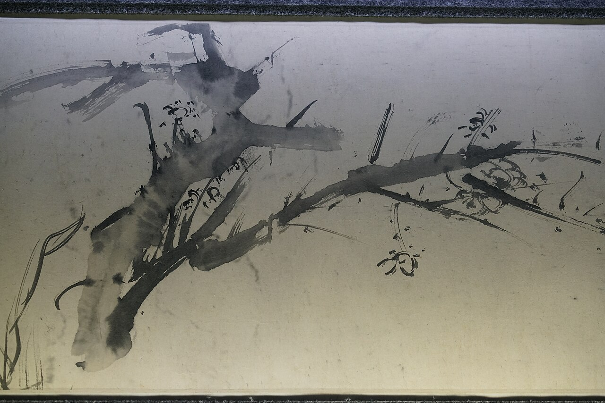

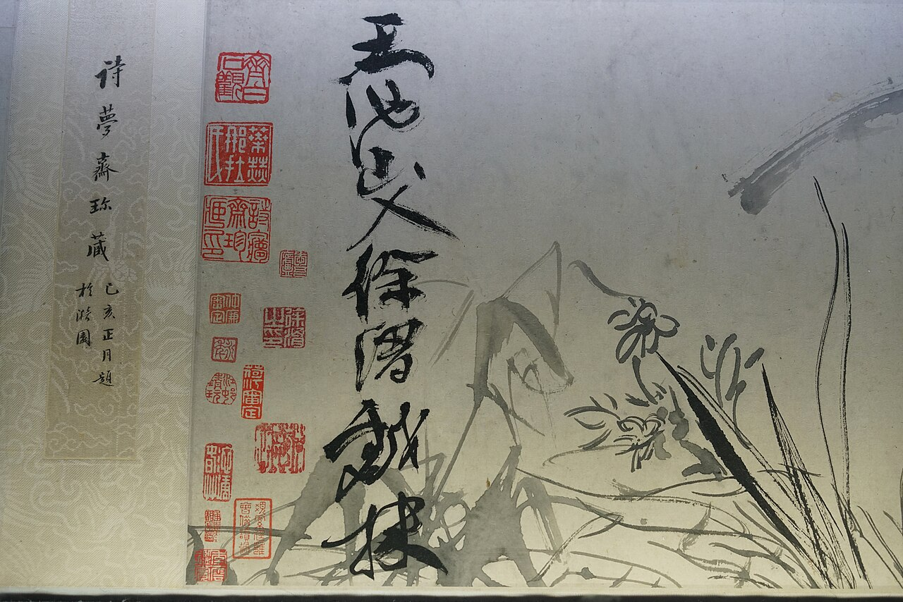

分歧：官方简介作“梅、兰、竹”；郑为作“梅、竹、水仙”；樊增祥“牡丹水仙押两班”。卷尾细叶小花目测近似水仙，但不作定论。“竹”在本页照片中未能目测确认待核实。
款识：“天池山人徐渭戏抹”已核实（图上可读），钤“徐渭之印”白文方印[S5]。不像他其他手卷一花配一诗，此卷仅卷尾一款。[S5]
鉴藏印（款左十余方，据吕晓晨与日本 qsshc 站著录）：“齐白石观”（朱文方印）、叶鹤伏“叶赫那拉氏”“诗梦斋珍藏印”“荷汀审定”、李恩庆“北平李氏珍藏图书”“仲廉审定”、卷尾画心“池塘春草”等。[S5][S8]逐印位置与释文待以南博图录核对。
叶鹤伏题签：“诗梦斋珍藏。己亥正月题于漪园”（己亥=1899）已核实（图上可读 + S5、S6）。
卷后题跋（据 S5 吕晓晨、S9）
| 顺序 | 题跋者 | 时间 | 要点 | 核实 |
|---|---|---|---|---|
| 引首 | 陈师曾（题签） | 约1917年前后（推测） | “青藤真迹 师曾题” | 图上可读 |
| 跋1前 | 叶鹤伏（题签） | 己亥 1899 | “诗梦斋珍藏，己亥正月题于漪园” | 图上可读 |
| 跋1 | 翁方纲 | 己亥除夕前二日（乾隆四十四年末，约公历1780年初） | 《徐天池水墨写生卷歌》，结句“空山独立始大悟，世间无物非草书”；钤“苏米斋”“覃溪”等 | 文本有两种转录异文待对原迹 |
| 跋2 | 李恩庆（季云） | 约1846年后 | 和翁诗；记述1845年陈介祺得卷，次年用王原祁《南山积翠》卷交换 | 据 S5 |
| 观款 | 黄益如（葆谦） | 光绪辛卯 1891 | “拜观于诗梦斋窗下” | 据 S5 |
| 跋3、跋4 | 樊增祥 | 丁巳 1917 中秋前七日，后又书于初九日 | 为郭人漳（宝生／葆生）题，和翁诗韵二首，又作长歌：“以水晕墨墨晕纸”“牡丹水仙押两班” | 据 S5 |
翁跋异文：S5作“根茎”“磊砢”，S9作“根尘”“磊酠”，并缺一字“帅■”。教学时建议直接看原迹或南博图录。翁跋纸本纵37、横468.4厘米（S9）。
4. 历史背景
徐渭其人（据正史与同时代传记）
- 徐渭，字文长，山阴（今绍兴）人，当过诸生，“有盛名”。总督胡宗宪招他入幕府，他替胡宗宪起草进献白鹿的表文，得到世宗赏识；胡宗宪擒徐海、诱王直，他都参与了谋划。[S13《明史》]
- “狂”的史料：《明史》记载，胡宗宪下狱后，“渭惧祸，遂发狂，引巨锥剚耳，深数寸，又以椎碎肾囊，皆不死。已，又击杀继妻，论死系狱，里人张元忭力救得免”。袁宏道《徐文长传》说他“卒以疑杀其继室，下狱论死”，晚年“愤益深，佯狂益甚”，还写下“先生数奇不已，遂为狂疾；狂疾不已，遂为囹圄。古今文人牢骚困苦，未有若先生者也”。[S13][S14]
注意：S10人民网把这句引成“未有弱先生者”，是误字，原文是“若”。媒体常说的“考八次”“九次自杀”，在这两篇原典里都没有具体数字，待以徐渭《畸谱》《自为墓志铭》核对。 - 才情：《明史》说他“天才超轶，诗文绝出伦辈。善草书，工写花草竹石”，自称“吾书第一，诗次之，文次之，画又次之”。袁宏道评他的书法“笔意奔放如其诗”，并说他“间以其余，旁溢为花鸟，皆超逸有致”。[S13][S14]
- 晚明语境：他经历嘉靖、隆庆、万历三朝。《明史》记载，嘉靖年间“王、李倡七子社”，徐渭“誓不入二人党”；“后二十年，公安袁宏道游越中，得渭残帙以示祭酒陶望龄，相与激赏，刻其集行世”。[S13]袁宏道也说他“雅不与时调合”，“故其名不出于越”。[S14]按南博公众号的说法，直到崇祯四年（1631），《明画录》才为他立传。[S2]
- “疯癫与才情”怎么讲：史料只能说明他有严重的精神危机和自残、杀妻入狱的经历，不能证明“疯了所以画得好”。鲁珊珊（S1）把他与凡·高对比，属于作者的阐释，不是史实。
谢稚柳“天下第一徐青藤”：出处核查
结论：原始出处未找到待核实。
- 常见转引：人民网/广州日报2014（“谢稚柳先生在观后冠其‘天下第一徐青藤’的美誉”，S10）、南博公众号2020（“观此卷后，叹曰”，S2）、中国江苏网2021（S6）、吕晓晨2018（S5）、《光明日报》2026（S1），都没有注明出自哪篇文章、哪本书或哪一年。
- 鲁力2000年用这句话作文章标题（S18），是本次检到最早的转引，期刊名待核实。
- 可能的语境：S1说20世纪60年代，张珩、韩慎先、谢稚柳鉴定此卷，评价为“极精”。这是有明确时间的鉴定记录，但“极精”和“天下第一徐青藤”不是同一句话。
- 它不在画卷的题跋里。S5逐一列出了卷上的题跋和题签，其中没有谢稚柳。
- 建议查：谢稚柳《鉴余杂稿》《中国古代书画研究十论》、南博编《南京博物院藏宝录》、2007年“镇院之宝”展图录。
流传与入藏
| 时间 | 事件 | 依据 |
|---|---|---|
| 明万历年间？ | 创作。南博公众号、人民网写“作于万历年间”；朱良志著作的图注写“创作年代不详” | S2、S10、朱良志《道在戏谑》引言 分歧 |
| 1779（己亥岁末） | 翁方纲题《徐天池水墨写生卷歌》 | S5、S9 |
| 1845 | 陈介祺用三百两银子从琉璃厂博古斋购得（据陈重元《琉璃厂文物地图》）；何绍基日记记“寿卿出示徐天池画卷，有覃溪题诗” | S5 |
| 1846 | 陈介祺与李恩庆互换：徐卷归李，王原祁《南山积翠》归陈 | S5（李跋、樊跋注） |
| 1891–1899 | 归叶鹤伏（叶赫那拉氏，号诗梦斋）；1891年黄益如观款，1899年题签 | S5 |
| 清末民初 | 李玉棻、廷雍、唐咏裳等人的印章可能说明这卷画几经易手，印主多为推测 | S5 推测 |
| 1917 | 郭人漳（葆生）“以千金易”得；樊增祥两次题跋；齐白石此时在北京，钤“齐白石观”（吕晓晨推测） | S5 |
| 1954 | 南京博物院购藏，吕晓晨说购自上海藏家杨文萼；S1说“征集入藏” | S5、S1 |
| 20世纪60年代 | 张珩、韩慎先、谢稚柳鉴定为“极精” | S1 |
| 2007 / 2017 | 2007年在南博“镇院之宝”展展出；2017年在“青藤白阳——徐渭、陈淳书画艺术特展”上首次全卷完整展出 | S1、S7 |
5. 参考来源
见第2节表格S1–S20。另有：城市知见网转载了南博公众号全文（200）；China Online Museum有整卷图，但图片被验证码拦截，没有绕过，也没有下载。
版权说明
- CC BY-SA 4.0编号01–15的照片：维基共享资源用户 Augustohai 于2017-11-28实拍；编号16：用户 Cangminzho 实拍；00拼排图是根据01–15制作的衍生图，按同一许可发布。使用时要署名作者、注明许可，改编后也要用同一许可共享。
- 画作本身完成于16世纪，作品已进入公有领域。照片里摄影者那一层的权利，按维基标注的 CC BY-SA 4.0 处理。
- 仅限课堂qsshc 的全卷扫描、各媒体文章配图（南博、光明网、新浪等）：版权属于原出版方或网站，只适合课堂讲解时打开原网页展示，不要转载。存档里有 qsshc 的副本，只供本地备课，没有放进公开仓库。
缺口清单
- 南博官网“典藏”数据库里检索不到此卷，没有官方藏品页、尺寸或高清图。
- “天下第一徐青藤”的原始出处未找到。
- 花卉的种数和名称（紫藤还是葡萄、兰还是水仙、有没有竹），以及尺寸，各资料不一致。需要以南博图录或荒井雄三2011年的论文为准。
- 知网/维普的论文摘要页（S15、S16）、CiNii（S17）、鲁力2000（S18）、宁波网（S12）在本次检索中打不开，刊期都只来自搜索摘要。
- 各段的印章位置和全部释文没有完整资料，只核实了陈师曾题签、徐渭款、叶鹤伏题签和“齐白石观”的存在。
- 没有找到可自由使用的整卷无缝高清图。
- 翁方纲跋释文有异文，李恩庆跋诗文本被略去（S5“诗略”）。
整理：Grok Bot · 2026-10-27（Asia/Taipei）· 链接均于当日实测。